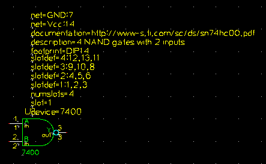

<!DOCTYPE html PUBLIC "-//W3C//DTD XHTML 1.0 Transitional//EN"
 "http://www.w3.org/TR/xhtml1/DTD/xhtml1-transitional.dtd">
<html xmlns="http://www.w3.org/1999/xhtml" xml:lang="en"
 lang="en" dir="ltr">
<head>
  <meta http-equiv="Content-Type" content="text/html; charset=utf-8" />
  <title>geda:scg</title>
  <meta name="generator" content="DokuWiki Release 2006-03-09" />
  <link rel="start" href="http://geda.seul.org/wiki/" />
  <link rel="contents" href="http://geda.seul.org/wiki/geda:scg?do=index" title="" />
  <link rel="alternate" type="application/rss+xml" title="Recent Changes" href="http://geda.seul.org/wiki/feed.php" />
  <link rel="alternate" type="application/rss+xml" title="Current Namespace" href="http://geda.seul.org/wiki/feed.php?mode=list&ns=geda" />
  <link rel="alternate" type="text/html" title="Plain HTML" href="http://geda.seul.org/wiki/geda:scg?do=export_xhtml" />
  <link rel="alternate" type="text/plain" title="Wiki Markup" href="http://geda.seul.org/wiki/geda:scg?do=export_raw" />
  <meta name="date" content="2006-11-02T12:04:37-0500" />
  <meta name="robots" content="index,follow" />
  <link rel="stylesheet" media="screen" type="text/css" href="lib/exe/css" />
  <link rel="stylesheet" media="print" type="text/css" href="lib/exe/001css" />
</head>
<body>
<div class="dokuwiki export">
<div class="toc">
<div class="tocheader toctoggle" id="toc__header">Table of Contents</div>
<div id="toc__inside">

<ul class="toc">
<li class="level1"><div class="li"><span class="li"><a href="#geda_gaf_symbol_creation_document" class="toc">gEDA/gaf Symbol Creation Document</a></span></div>
<ul class="toc">
<li class="level2"><div class="li"><span class="li"><a href="#overview" class="toc">Overview</a></span></div></li>
<li class="level2"><div class="li"><span class="li"><a href="#component_symbol_creation" class="toc">Component symbol creation</a></span></div></li>
<li class="level2"><div class="li"><span class="li"><a href="#requirements" class="toc">Requirements</a></span></div></li>
<li class="level2"><div class="li"><span class="li"><a href="#style" class="toc">Style</a></span></div>
<ul class="toc">
<li class="level3"><div class="li"><span class="li"><a href="#text" class="toc">Text</a></span></div></li>
<li class="level3"><div class="li"><span class="li"><a href="#attributes" class="toc">Attributes</a></span></div></li>
<li class="level3"><div class="li"><span class="li"><a href="#graphics" class="toc">Graphics</a></span></div></li>
<li class="level3"><div class="li"><span class="li"><a href="#pins" class="toc">Pins</a></span></div></li>
<li class="level3"><div class="li"><span class="li"><a href="#electrical" class="toc">Electrical</a></span></div></li>
</ul>
</li>
<li class="level2"><div class="li"><span class="li"><a href="#footprint_naming_conventions" class="toc">Footprint naming conventions</a></span></div>
<ul class="toc">
<li class="level3"><div class="li"><span class="li"><a href="#notes" class="toc">Notes</a></span></div></li>
<li class="level3"><div class="li"><span class="li"><a href="#integrated_circuit_packages" class="toc">Integrated circuit packages</a></span></div></li>
<li class="level3"><div class="li"><span class="li"><a href="#integrated_circuit_smt_packages" class="toc">Integrated circuit SMT packages</a></span></div></li>
<li class="level3"><div class="li"><span class="li"><a href="#basic_semiconductors" class="toc">Basic semiconductors</a></span></div></li>
<li class="level3"><div class="li"><span class="li"><a href="#basic_smt_semiconductors" class="toc">Basic SMT semiconductors</a></span></div></li>
<li class="level3"><div class="li"><span class="li"><a href="#passive_components" class="toc">Passive components</a></span></div></li>
<li class="level3"><div class="li"><span class="li"><a href="#passive_smt_components" class="toc">Passive SMT components</a></span></div></li>
</ul>
</li>
<li class="level2"><div class="li"><span class="li"><a href="#hints_and_tips" class="toc">Hints and Tips</a></span></div></li>
<li class="level2"><div class="li"><span class="li"><a href="#example" class="toc">Example</a></span></div></li>
<li class="level2"><div class="li"><span class="li"><a href="#document_revision_history" class="toc">Document Revision History</a></span></div></li></ul>
</li></ul>
</div>
</div>

<h1><a name="geda_gaf_symbol_creation_document" id="geda_gaf_symbol_creation_document">gEDA/gaf Symbol Creation Document</a></h1>
<div class="level1">

<p>
by: Ales V. Hvezda / July 6th, 2004
</p>

<p>
The latest version of this document may be found at: <a href="http://geda.seul.org/wiki/geda:scg" class="urlextern" title="http://geda.seul.org/wiki/geda:scg"  rel="nofollow">http://geda.seul.org/wiki/geda:scg</a>
</p>

<p>
This document is released under the <a href="geda_gfdl.html" class="wikilink1" title="geda:gfdl">GNU Free Documentation License (GFDL)</a>.
</p>

</div>
<!-- SECTION [1-264] -->
<h2><a name="overview" id="overview">Overview</a></h2>
<div class="level2">

<p>
This document describes the creation of component symbols, including style conventions, and hints/tips and things to look out for when drawing symbols for the gEDA/gaf system.
</p>

</div>
<!-- SECTION [265-462] -->
<h2><a name="component_symbol_creation" id="component_symbol_creation">Component symbol creation</a></h2>
<div class="level2">

<p>
Component symbols (from here on known as &ldquo;symbols&rdquo;) are drawn using gschem just like drawing a schematic sheet. Here are the steps in a symbol in the gEDA/gaf system:<br/>
 1. Run gschem and find a blank page or run: gschem filename-1.sym<br/>
 2. Draw the symbol (see the style guide below for some conventions).<br/>
 3. Translate the symbol to the origin using Edit/Symbol Translate...<br/>

</p>
<ul>
<li class="level1"><div class="li"> Zoom in at least one step.</div>
</li>
<li class="level1"><div class="li"> Make sure the snap is ON (this is critical).</div>
</li>
<li class="level1"><div class="li"> Make sure grid snap size is set to 100 (this is critical).</div>
</li>
<li class="level1"><div class="li"> Select &ldquo;Symbol Translate...&rdquo; or the press equivalent hotkey.</div>
</li>
<li class="level1"><div class="li"> Enter 0 into the entry field and press OK.<br/>
</div>
</li>
</ul>

<p>
Translating the symbol to the origin is a required step. To translate a symbol elsewhere, enter a offset (in mils) which is a even multiple of 100. Make sure all pins are snapped to a 100 mil grid point.
</p>

<p>
4. Save the symbol using Save or SaveAs... Here are some symbol naming conventions:<br/>

</p>
<ul>
<li class="level1"><div class="li"> Symbols are named: symbolname-#.sym</div>
</li>
<li class="level1"><div class="li"> Symbols end with a .sym extension.</div>
</li>
<li class="level1"><div class="li"> Symbols have a -# where # is a number. Typically # is 1 but if there are multiple symbols for a device then this number simply increments.</div>
</li>
<li class="level1"><div class="li"> Symbol names are typically lowercase but letters which are part of a part number are uppercase.</div>
</li>
<li class="level1"><div class="li"> The above case rule can be broken if the filename looks incorrect or wrong.</div>
</li>
</ul>

<p>
 5. Place the symbol in one of the directories specified by the componentlibrary keyword in the system-gafrc file. Once this is done, the symbol should be visible immediately and can be selected and placed with the &ldquo;Add/Select Component...&rdquo; menu item.
</p>

</div>
<!-- SECTION [463-2082] -->
<h2><a name="requirements" id="requirements">Requirements</a></h2>
<div class="level2">

<p>
This section describes the various requirements which must be met in order to create a valid symbol which will display and netlist in the gEDA/gaf system. Most of the requirements center around having certain attributes attached or inside the symbol.<br/>
 Running gsymcheck will check that all of these requirements are met. gsymcheck will output fatal errors which are quite serious and must be corrected. gsymcheck will also output warnings on things which should be fixed but are not fatal.<br/>
 For more information on the attributes presented here, please see the Master Attribute Document.
</p>
<ul>
<li class="level1"><div class="li"> device=DEVICENAME should be placed somewhere in the symbol and made invisible. device= is the device name and is required. Typically the devicename is in all caps (capital letters). This attribute should not be used as a label. Use a separate text object for the label. If the object is a graphic then device= should be set to none (device=none). It is no longer required to attach this attribute anything; just having it exist as device=DEVICENAME is good enough.</div>
</li>
<li class="level1"><div class="li"> graphical=1 should exist somewhere in a symbol which is purely graphical (such as a title block or decon symbol). Symbols which have this attribute have no electrical or circuit significance. Don&rsquo;t forget to set device=none.</div>
</li>
<li class="level1"><div class="li"> description=text should exist somewhere in the symbol. This attribute provides an one line description of the symbol.</div>
</li>
<li class="level1"><div class="li"> All pins should have a pair of attributes attached to them: pinseq=# and pinnumber=#. The first attribute, pinseq=# is just a sequence number and increments sequentially starting at 1. The second attribute pinnumber=# is the number of the pin. When a symbol is netlisted, the pin numbers are output in order of pin sequence. The pin number can be alphanumeric (i.e. like E or C).</div>
</li>
<li class="level1"><div class="li"> All pins should also have pinlabel=value attached to them. This attribute is the name or label of the pin (vs the pin number). This attribute is also used when a symbol is used in a hierarchical schematic. Please make this attribute green (instead of the default attribute yellow).</div>
</li>
<li class="level1"><div class="li"> All pins should also have pintype=value attached to them. This attribute describes the kind of a pin. Possible values are: in, out, io, oc, oe, pas, tp, tri, clk, pwr. Please see the Master Attribute Document for more info.</div>
</li>
<li class="level1"><div class="li"> If a component has multiple slots in a package (such as a 7400 (NAND) which has 4 NANDs per package) then you need a numslots=# attribute. The # is the number of slots the device has. numslots= should be exist somewhere in the symbol and made invisible. Additional slot related required attributes are described below.</div>
</li>
<li class="level1"><div class="li"> If a component has multiple slots in a physical package then you also need to include a slotdef=#:#,#,#... for every slot. The first # corresponds to the slot number. If a device has 4 slots then there should be slotdef=1:..., slotdef=2:..., slotdef=3:..., and slotdef=4:..., attributes existing somewhere in the symbol and made invisible. The subsequent # have a one-to-one correspondence to pinseq=# attributes and specify what corresponding pinnumber=# should be when that slot is set. See The attached 7400-1.sym as an example of how this should all work.</div>
</li>
<li class="level1"><div class="li"> It is recommended that all symbols which have slots have a slot=1 attribute inside the symbol.</div>
</li>
<li class="level1"><div class="li"> footprint=PACKAGENAME should exist somewhere in the symbol which might be used with the PCB netlister. PACKAGENAME is the PCB footprint or package type like DIP14 or DIP40. Please see the Footprint naming conventions chapter for further detail. See also the PCB documentation and gnetlist/docs/README.pcb for more info on this attribute.</div>
</li>
<li class="level1"><div class="li"> You should put a refdes=U? attribute inside the symbol. Make only the value visible and it will be promoted (attached to the outside of the symbol (so it can be edited) when the symbol is placed in a schematic.</div>
</li>
<li class="level1"><div class="li"> The label= attribute should not be attached anywhere in the symbol. It is obsolete.</div>
</li>
<li class="level1"><div class="li"> The name= attribute should not be attached anywhere in the symbol.</div>
</li>
<li class="level1"><div class="li"> The netname= attribute should not be attached anywhere in the symbol. It is only used in schematics.</div>
</li>
</ul>

</div>
<!-- SECTION [2083-6223] -->
<h2><a name="style" id="style">Style</a></h2>
<div class="level2">

<p>
This section describes the style in which is used in the standard gEDA/gaf symbol library.
</p>

</div>
<!-- SECTION [6224-6333] -->
<h3><a name="text" id="text">Text</a></h3>
<div class="level3">
<ul>
<li class="level1"><div class="li"> All Text labels should all be 10 pt in size.</div>
</li>
<li class="level1"><div class="li"> Text (labels not attributes) should be color number 9 (text | green).</div>
</li>
</ul>

</div>
<!-- SECTION [6334-6472] -->
<h3><a name="attributes" id="attributes">Attributes</a></h3>
<div class="level3">
<ul>
<li class="level1"><div class="li"> Pin numbers (which are attributes) should all be 8 pt in size.</div>
</li>
<li class="level1"><div class="li"> Attached attributes should be yellow. The color is set automatically to yellow if the text item is attached.</div>
</li>
<li class="level1"><div class="li"> The only exception to this is pinlabel= attributes, those should be color number 9 (text | green). If every text item within a symbol is yellow, the symbol looks too yellow.</div>
</li>
<li class="level1"><div class="li"> Attributes can be attached to some part of the symbol. Toplevel attributes (like the device= or net= attributes) used to be required to be attached to something to be attributes, but now they just have to exist in the symbol file as name=value.</div>
</li>
<li class="level1"><div class="li">  Expanding a bit on the last sentence, as long as the text item has the format name=value, it is considered an attribute. Attributes inside a symbol do not have to be attached to anything. In order to see hidden attributes in gschem select Edit/Show/Hide Inv Text.</div>
</li>
<li class="level1"><div class="li"> There is a symbol content versioning system in libgeda which is based on the symversion= attribute. Please see the Master Attribute Document for more information on using this versioning scheme.</div>
</li>
</ul>

</div>
<!-- SECTION [6473-7569] -->
<h3><a name="graphics" id="graphics">Graphics</a></h3>
<div class="level3">
<ul>
<li class="level1"><div class="li"> Lines, boxes, arcs, and any other graphics should be color number 3 (graphic | green).</div>
</li>
<li class="level1"><div class="li"> Polarity bubbles should be color number 6 (logic bubble | cyan)</div>
</li>
<li class="level1"><div class="li"> If you are unsure on how to make a new symbol look or how big to make a new symbol, look at the existing symbols to get a feel for the appropriate appearance and size.</div>
</li>
</ul>

</div>
<!-- SECTION [7570-7920] -->
<h3><a name="pins" id="pins">Pins</a></h3>
<div class="level3">
<ul>
<li class="level1"><div class="li"> Pins should all be 300 mils (3 grid spaces) long.</div>
</li>
<li class="level1"><div class="li"> For pins which are next to a logic bubble, make the pins 200 mils (2 grid spaces) long and then make the logic bubble 100 mils in diameter. In order to draw a 100 mil diameter circle, you will need to change the snap spacing to 50.</div>
</li>
<li class="level1"><div class="li"> A pin has two ends: one end has a red endpoint and one end that does not. The red endpoint is where nets can be connected. You can either rotate the pin so that this active end is in the right place or manually edit the symbol file changing the &ldquo;whichend&rdquo; parameter on the pin object. See the File Format document for more info.</div>
</li>
<li class="level1"><div class="li"> Be that all endpoints of pins which are meant to be connected to are on the 100 mil grid. The endpoint which is not active can be off the grid if necessary.</div>
</li>
<li class="level1"><div class="li"> Pins should be color number 1 (pins | white).</div>
</li>
<li class="level1"><div class="li"> Leave 400 mils (4 grid spaces) between (vertically) pins, unless you are drawing a special symbol, then just try to make it look good.</div>
</li>
<li class="level1"><div class="li"> Pin number attributes should be 50 mils above (or below; which ever makes the most sense) the pin which they are attached to.</div>
</li>
<li class="level1"><div class="li"> Input pins belong on the left and output pins belong on the right of the symbol.</div>
</li>
<li class="level1"><div class="li"> Please do not mix inputs and outputs on the same side of the symbol, unless absolutely necessary.</div>
</li>
<li class="level1"><div class="li"> You can have pins on the top or bottom of a symbol.</div>
</li>
<li class="level1"><div class="li"> The order for rows of pins (buses) should be LSB (least significant bit) to MSB (most significant bit). When drawing pins which are part of a bus, make sure the LSB of the bus is at the top (or for pins on top/bottom of a symbol, left of the rest of the other pins). Look at 74/74181-1.sym for a correct example of this order (A0 on top through A3 and B0 on top through B3). Violating this rule will make connecting buses much more diffcult.</div>
</li>
<li class="level1"><div class="li"> When placing pins on logic gates, be sure to place the smallest pin numbers toward the top (or left) and then increment going down (or across).</div>
</li>
</ul>

</div>
<!-- SECTION [7921-9876] -->
<h3><a name="electrical" id="electrical">Electrical</a></h3>
<div class="level3">
<ul>
<li class="level1"><div class="li"> Do not draw power and ground pins. That information will be conveyed using attributes (see the netattrib document).</div>
</li>
<li class="level1"><div class="li"> The above rule can be broken if necessary, but keep in mind most of the standard library does not have power pins showing.</div>
</li>
<li class="level1"><div class="li"> Keep in mind, symbols are supposed to be symbolic, they do not represent the physical package that the device comes in.</div>
</li>
<li class="level1"><div class="li"> There is some disagreement on above, so this is okay too: Arrange the pins on a symbol logically so that they promote an uncluttered schematic. Note that this is frequently not the same pin arrangement as the physical device.</div>
</li>
</ul>

</div>
<!-- SECTION [9877-10499] -->
<h2><a name="footprint_naming_conventions" id="footprint_naming_conventions">Footprint naming conventions</a></h2>
<div class="level2">

<p>
This section describes the conventions for naming of footprints used in gEDA/gaf.<br/>
 The purpose of the naming convention is to establish a standard to maintain the same naming convention through the different phases of the CAD chain. This helps in ensuring that the collaborative effort of gEDA/gaf is not lost.
</p>

</div>
<!-- SECTION [10500-10853] -->
<h3><a name="notes" id="notes">Notes</a></h3>
<div class="level3">
<ul>
<li class="level1"><div class="li"> Unless otherwise noted, numerical pin names will be used, starting from 1.</div>
</li>
<li class="level1"><div class="li"> n is for the pin count.</div>
</li>
<li class="level1"><div class="li"> m is for the pin spacing in mils.</div>
</li>
<li class="level1"><div class="li"> x is for the x dimension of the package (excluding pins). In particular this is used for the QFP package family.</div>
</li>
<li class="level1"><div class="li"> SMT means surface mount, other components are through-hole.</div>
</li>
</ul>

</div>
<!-- SECTION [10854-11196] -->
<h3><a name="integrated_circuit_packages" id="integrated_circuit_packages">Integrated circuit packages</a></h3>
<div class="level3">
<ul>
<li class="level1"><div class="li"> Dual in line packages with up to 22 100 mil spaced pins and 300 mil row spacing are called DIPn.</div>
</li>
<li class="level1"><div class="li"> Dual in line packages with 24 or more 100 mil spaced pins and 300 mil row spacing are called DIPnN.</div>
</li>
<li class="level1"><div class="li"> Dual in line packages with 100 mil spaced pins and 400 mil row spacing are called DIPnH.</div>
</li>
<li class="level1"><div class="li"> Dual in line packages with 24 or more 100 mil spaced pins and 600 mil row spacing are called DIPn.</div>
</li>
<li class="level1"><div class="li"> Shrink dual in line packages with up to 24 70 mil spaced pins and 300 mil row spacing are called SDIPn.</div>
</li>
<li class="level1"><div class="li"> Shrink dual in line packages with more than 24 70 mil spaced pins and 400 mil row spacing are called SDIPn.</div>
</li>
<li class="level1"><div class="li"> Single in line packages with 100 mil spaced pins are called SIPnN. See also JUMPER, below.</div>
</li>
<li class="level1"><div class="li"> Zig-zag in-line package are called ZIPn.</div>
</li>
<li class="level1"><div class="li"> Plastic leadless chip carrier with pin socket are called PLCCnX.</div>
</li>
</ul>

</div>
<!-- SECTION [11197-12065] -->
<h3><a name="integrated_circuit_smt_packages" id="integrated_circuit_smt_packages">Integrated circuit SMT packages</a></h3>
<div class="level3">
<ul>
<li class="level1"><div class="li"> Small outline SMT packages with up to 16 50 mil spaced pins and 150 mil total width are called SOn.</div>
</li>
<li class="level1"><div class="li"> Small outline SMT packages with more than 16 50 mil spaced pins and 150 mil total width are called SOnN.</div>
</li>
<li class="level1"><div class="li"> Small outline SMT packages with 50 mil spaced pins and 200 mil total width are called SOnM.</div>
</li>
<li class="level1"><div class="li"> Small outline SMT packages with up to 20 50 mil spaced pins and 300 mil total width are called SOnW.</div>
</li>
<li class="level1"><div class="li"> Small outline SMT packages with more than 20 50 mil spaced pins and 300 mil total width are called SOn.</div>
</li>
<li class="level1"><div class="li"> Small outline SMT packages with 44 or more 50 mil spaced pins and 525 mil total width are called SOn.</div>
</li>
<li class="level1"><div class="li"> Metric shrink small outline SMT packages with 0.65 mm spaced pins and 323 mil total width are called MSSOPn. NOTE: To be confirmed.</div>
</li>
<li class="level1"><div class="li"> Metric shrink small outline SMT packages with up to 44 0.65 mm spaced pins and 420 mil total width are called MSSOPnW.</div>
</li>
<li class="level1"><div class="li"> Metric shrink small outline SMT packages with over 44 0.65 mm spaced pins and 545 mil total width are called MSSOPnW.</div>
</li>
<li class="level1"><div class="li"> Shrink small outline SMT packages with 25 mil spaced pins and 420 mil total width are called SSOPnW.</div>
</li>
<li class="level1"><div class="li"> Quarter size small outline SMT packages with 25 mil spaced pins and 244 mil total width are called SSOPn.</div>
</li>
<li class="level1"><div class="li"> Thin small outline SMT packages with 21.65 mil spaced pins and 535 mil total width are called TSOPn.</div>
</li>
<li class="level1"><div class="li"> Thin small outline SMT packages with 20 mil spaced pins and 795 mil total width are called TSOPnA.</div>
</li>
<li class="level1"><div class="li"> Thin small outline SMT packages with 20 mil spaced pins and 559 mil total width are called TSOPnB.</div>
</li>
<li class="level1"><div class="li"> Thin shrink small outline SMT packages with up to 28 26 mil spaced pins and 260 mil total width are called TSSOPn.</div>
</li>
<li class="level1"><div class="li"> Thin shrink small outline SMT packages with over 28 20 mil spaced pins and 319 mil total width are called TSSOPn.</div>
</li>
<li class="level1"><div class="li"> Ultra Super Mini SMT packages with up to 16 0.5 mm spaced pins are called USn.</div>
</li>
<li class="level1"><div class="li"> Plastic leadless chip carrier SMT are called PLCCn.</div>
</li>
<li class="level1"><div class="li"> Square quad-side at pack SMT are called QFPn x.</div>
</li>
<li class="level1"><div class="li"> Rectangular quad-side at pack SMT are called QFPn R.</div>
</li>
<li class="level1"><div class="li"> Square low profile quad-side at pack SMT are called LQFPn x.</div>
</li>
<li class="level1"><div class="li"> Square thin quad-side at pack SMT are called TQFPn x.</div>
</li>
<li class="level1"><div class="li"> Square Quad-side at no-lead SMT without exposed paddle (back side contact) are called QFNn x. Pin count is n and package size is x mm.</div>
</li>
<li class="level1"><div class="li"> Square Quad-side at no-lead SMT with exposed paddle (back side contact) are called QFNn x EP. Pin count is n and package size is x mm.</div>
</li>
<li class="level1"><div class="li"> Thin profile square Quad-side at no-lead SMT without exposed paddle (back side contact) are called TQFNn x. Pin count is n and package size is x mm.</div>
</li>
<li class="level1"><div class="li"> Thin profile square Quad-side at no-lead SMT with exposed paddle (back side contact) are called TQFNn x EP. Pin count is n and package size is x mm.</div>
</li>
<li class="level1"><div class="li"> Dual in line style crystal oscillators are OSC8 and OSC14.</div>
</li>
<li class="level1"><div class="li"> 5 pin SOT SMT packages are SOT25 and SOT325.</div>
</li>
<li class="level1"><div class="li"> 6 pin SOT SMT packages are SOT26 and SOT326.</div>
</li>
</ul>

</div>
<!-- SECTION [12066-14996] -->
<h3><a name="basic_semiconductors" id="basic_semiconductors">Basic semiconductors</a></h3>
<div class="level3">
<ul>
<li class="level1"><div class="li"> Axial diodes are called ALFm. Pin 1 is the cathode.</div>
</li>
<li class="level1"><div class="li"> Conventional through hole LED is LED3 and LED5 for 3 and 5 mm respectively. Pin 1 is plus. NOTE: Should probably be changed to be in line with diode convention.</div>
</li>
<li class="level1"><div class="li"> TO transistors are TO5, TO92, TO126, TO220 etc. Suxes may apply, e.g. TO126W is for wide, TO126S is for standing, TO126SW is for standing, wide.</div>
</li>
</ul>

</div>
<!-- SECTION [14997-15399] -->
<h3><a name="basic_smt_semiconductors" id="basic_smt_semiconductors">Basic SMT semiconductors</a></h3>
<div class="level3">
<ul>
<li class="level1"><div class="li"> SOD diode SMT packages use their standard package name, e.g. SOD80, SOD87, SOD106A, SOD110. There are also SOD123, SOD323 with narrow pads.</div>
</li>
<li class="level1"><div class="li"> SOT transistor SMT packages use their standard package name, e.g. SOT23, SOT323. There is also an SC90.</div>
</li>
<li class="level1"><div class="li"> SOT transistor SMT packages with numbering as for diodes (pin 1 is cathode, pin 2 anode) are SOT23D, SOT323D.</div>
</li>
<li class="level1"><div class="li"> 4 pin SOT SMT packages are SOT89, SOT143, SOT223.</div>
</li>
</ul>

</div>
<!-- SECTION [15400-15855] -->
<h3><a name="passive_components" id="passive_components">Passive components</a></h3>
<div class="level3">
<ul>
<li class="level1"><div class="li"> Axial non-polar components (typically resistor, capacitor) are called ACYm.</div>
</li>
<li class="level1"><div class="li"> Bottom lead (radial) non-polar circular component (typically capacitor) is RCYm.</div>
</li>
<li class="level1"><div class="li"> Bottom lead non-polar rectangular component (typically capacitor) is BREm.</div>
</li>
<li class="level1"><div class="li"> A standard crystal is HC49, or other HC designations as required.</div>
</li>
<li class="level1"><div class="li"> Single row 100 mil pin spacing jumpers are JUMPERn. The main difference compared to single in line package is the hole size.</div>
</li>
<li class="level1"><div class="li"> Dual row 100 mil spacing headers with DIP pin numbering are HEADERn 1. Note that n is an even number.</div>
</li>
<li class="level1"><div class="li"> Dual row 100 mil spacing headers with ribbon cable numbering are HEADERn 2. Note that n is an even number.</div>
</li>
<li class="level1"><div class="li"> Angled full header connectors with latches are DIN41651 n.</div>
</li>
<li class="level1"><div class="li"> Standing full header connectors with latches are DIN41651 nS.</div>
</li>
<li class="level1"><div class="li"> DSUB connectors female are DBnF.</div>
</li>
<li class="level1"><div class="li"> DSUB connectors male are DBnM.</div>
</li>
<li class="level1"><div class="li"> Female DIN card-to-card connectors are DIN41612CnF. Add S suffix for standing.</div>
</li>
<li class="level1"><div class="li"> Male DIN card-to-card connectors are DIN41612CnM. Add S suffix for standing.</div>
</li>
<li class="level1"><div class="li"> AMP modular RJ connectors with screen are RJ11, RJ12 and RJ45.</div>
</li>
</ul>

</div>
<!-- SECTION [15856-16977] -->
<h3><a name="passive_smt_components" id="passive_smt_components">Passive SMT components</a></h3>
<div class="level3">
<ul>
<li class="level1"><div class="li"> Standard SMT resistors, inductors, capacitors etc are 0201, 0402, 0603, 0805, 1206, 1210, 1806, 1812, 1825, 2020, 2706.</div>
</li>
<li class="level1"><div class="li"> Tantalum SMT capacitors are EIA3216, EIA3528, EIA6032, and EIA7343. Pin 1 is plus.</div>
</li>
<li class="level1"><div class="li"> SMT electrolytics are designated by can diameter in 1/10 mm: SME33, SME43, SME53, SME66, SME84, SME104.</div>
</li>
</ul>

</div>
<!-- SECTION [16978-17330] -->
<h2><a name="hints_and_tips" id="hints_and_tips">Hints and Tips</a></h2>
<div class="level2">

<p>
This section describes some hints and tips which will make your symbol creation experience easier.<br/>

</p>
<ul>
<li class="level1"><div class="li"> Avoid drawing things off of the grid. If you do, you cannot move the object(s) using the move command (if the grid is on) since the object will be snapped to the grid. [This was an old bug, which I think has been fixed, but avoid doing this anyway]. Use the symbol translate command instead (or move the object with grid snap off)</div>
</li>
<li class="level1"><div class="li"> If you need a finer grid then use Options/Snap Grid Spacing... to set a finer grid snap spacing. Just remember to set this back to 100 once you are ready to translate the symbol to the origin.</div>
</li>
<li class="level1"><div class="li"> If you want to translate a symbol from the origin to elsewhere, then use the &ldquo;Symbol translate&rdquo; command and enter a non zero number. Make sure this number is a multiple of 100 (ie 1000, or 1100).</div>
</li>
<li class="level1"><div class="li"> Pins MUST be snapped on the 100 spaced grid (at least the end which will have nets connected to it).</div>
</li>
<li class="level1"><div class="li"> Pins MUST be snapped on the 100 spaced grid (at least the end which will have nets connected to it). Yes this is line a duplicate. I can&rsquo;t stress this point enough.</div>
</li>
<li class="level1"><div class="li"> Remember that pins are special objects; if you want to add a pin, make sure it is a pin and not a line or net. Use the Add/Pin command to place a pin.</div>
</li>
<li class="level1"><div class="li"> Don&rsquo;t include nets or buses inside symbols. That is not supported and doesn&rsquo;t make much sense anyway.</div>
</li>
</ul>

</div>
<!-- SECTION [17331-18726] -->
<h2><a name="example" id="example">Example</a></h2>
<div class="level2">

<p>
This section provides a simple example which tries to follow all of the above rules. This symbol is of a 7400 (NAND gate).<br/>

</p>

<p>
<pre STYLE="background : Lightgreen;margin-left : 2em"><font size="+0">v 20031231 1
L 300 200 300 800 3 0 0 0 -1 -1
T 300 0 9 8 1 0 0 0 1
7400
L 300 800 700 800 3 0 0 0 -1 -1
T 500 900 5 10 0 0 0 0 1
device=7400
T 500 1100 5 10 0 0 0 0 1
slot=1
T 500 1300 5 10 0 0 0 0 1
numslots=4
T 500 1500 5 10 0 0 0 0 1
slotdef=1:1,2,3
T 500 1700 5 10 0 0 0 0 1
slotdef=2:4,5,6
T 500 1900 5 10 0 0 0 0 1
slotdef=3:9,10,8
T 500 2100 5 10 0 0 0 0 1
slotdef=4:12,13,11
L 300 200 700 200 3 0 0 0 -1 -1
A 700 500 300 270 180 3 0 0 0 -1 -1
V 1050 500 50 6 0 0 0 -1 -1 0 -1 -1 -1 -1 -1
P 1100 500 1300 500 1 0 1
{
T 1100 550 5 8 1 1 0 0 1
pinnumber=3
T 1100 450 5 8 0 1 0 2 1
pinseq=3
T 950 500 9 8 0 1 0 6 1
pinlabel=Y
T 950 500 5 8 0 1 0 8 1
pintype=out
}
P 300 300 0 300 1 0 1
{
T 200 350 5 8 1 1 0 6 1
pinnumber=2
T 200 250 5 8 0 1 0 8 1
pinseq=2
T 350 300 9 8 0 1 0 0 1
pinlabel=B
T 350 300 5 8 0 1 0 2 1
pintype=in
}
P 300 700 0 700 1 0 1
{
T 200 750 5 8 1 1 0 6 1
pinnumber=1
T 200 650 5 8 0 1 0 8 1
pinseq=1
T 350 700 9 8 0 1 0 0 1
pinlabel=A
T 350 700 5 8 0 1 0 2 1
pintype=in
}
T 300 900 8 10 1 1 0 0 1
refdes=U?
T 500 2250 5 10 0 0 0 0 1
footprint=DIP14
T 500 2450 5 10 0 0 0 0 1
description=4 NAND gates with 2 inputs
T 500 2850 5 10 0 0 0 0 1
net=Vcc:14
T 500 3050 5 10 0 0 0 0 1
net=GND:7
T 500 2650 5 10 0 0 0 0 1
documentation=http://www-s.ti.com/sc/ds/sn74hc00.pdf
</font></pre>
</p>

<p>
This example produces the following (using gschem):
</p>

<p>
<a href="_detail/geda_symbol_7400-1_hidden.html" class="media" title="geda:symbol_7400-1_hidden.png"></a>
</p>

<p>
This is the same symbol with all the hidden text visible (via Edit/Show/Hide Inv Text):
</p>

<p>
<a href="_detail/geda_symbol_7400-1.html" class="media" title="geda:symbol_7400-1.png"></a>
</p>

</div>
<!-- SECTION [18727-20443] -->
<h2><a name="document_revision_history" id="document_revision_history">Document Revision History</a></h2>
<div class="level2">
<table class="inline">
	<tr>
		<td> September 14th, 2002</td><td>Created symbol.tex from symbols.html </td>
	</tr>
	<tr>
		<td> October 31st, 2002</td><td>Fixed bad example symbol </td>
	</tr>
	<tr>
		<td> February 11th, 2003</td><td>Footprint naming conventions added </td>
	</tr>
	<tr>
		<td> September 27th, 2003</td><td>Applied Dan McMahill&rsquo;s QFP and QFN patch </td>
	</tr>
	<tr>
		<td> July 6th, 2004</td><td>Added a bunch more details/hints to the pin section </td>
	</tr>
</table>
<br />

</div>
<!-- SECTION [20444-] --></div>
</body>
</html>
